SymTorch: A PyTorch Framework for Symbolic Distillation of Neural Networks
A quick overview of how to use SymTorch.
Elizabeth S.Z. Tan, Adil Soubki, Miles Cranmer
University of Cambridge
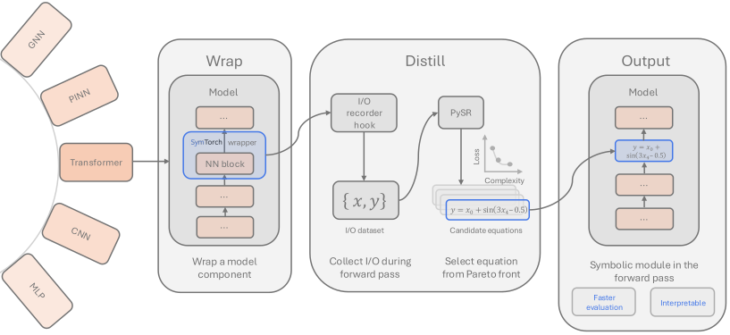
Symbolic distillation builds interpretable models in the form of closed-form mathematical expressions. This approach has shown promise in discovering physical laws and mathematical relationships directly from trained deep learning models, yet adoption remains limited due to the engineering barrier of integrating symbolic regression into deep learning workflows.
We introduce SymTorch, a library that automates this integration by wrapping neural network components, collecting their input-output behavior, and distilling them into human-readable equations via PySR. SymTorch handles the engineering challenges that have hindered adoption: GPU-CPU data transfer, input-output caching, model serialization, and seamless switching between neural and symbolic forward passes.
We demonstrate SymTorch across diverse architectures including GNNs, PINNs and transformer models. Finally, we present a proof-of-concept for accelerating LLM inference by replacing MLP layers with symbolic surrogates, achieving an 8.3% throughput improvement with moderate performance degradation.
Deep learning models excel at analyzing large datasets, but because of the highly-parameterized nature of neural networks, they remain largely uninterpretable. This has spurred extensive research into explainable AI.
One promising direction is mechanistic interpretability, which focuses on identifying circuits, neurons, and activation dimensions within specific model architectures. These methods enable researchers to identify which components or dimensions matter for specific behaviors or concepts.
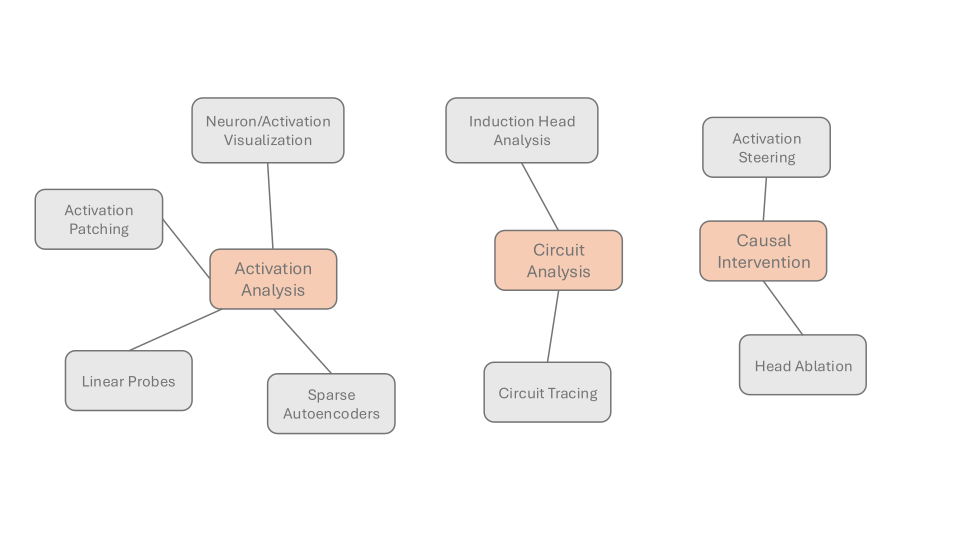
SymTorch addresses a complementary question: what function does a component compute? In doing so, we provide a more holistic approach to model interpretability.
In physics, interpretability means using concise equations that reliably explain phenomena. These equations are written in the language of mathematical operators and variables whose physical effects are understood. Equations have the benefit over dense neural networks as they enable direct inspection of input-output mappings and analysis of how input variations affect outputs, including in out-of-distribution settings. They also have the capacity to be computationally quicker than neural networks.
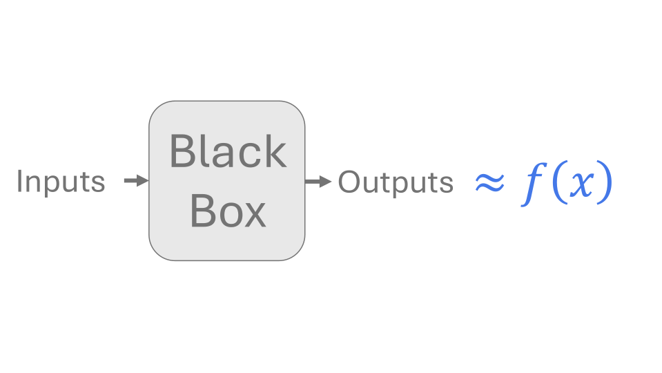
We use symbolic regression to distill NN components into human-readable mathematical formulas. Symbolic distillation provides architecture-agnostic interpretability by approximating component behavior with closed-form expressions. We leverage genetic algorithms through PySR to perform the symbolic regression.
A quick overview of how to use SymTorch.
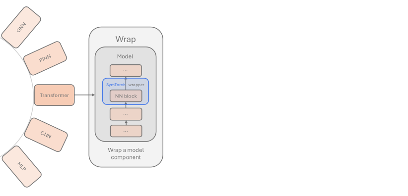
Choose any trained PyTorch model we want to analyze.
Python callable functions are also acceptable provided they form a mapping \( \mathbf{x}\in \mathbb{R}^{D_I} \rightarrow \mathbf{y}\in \mathbb{R}^{D_O}\).
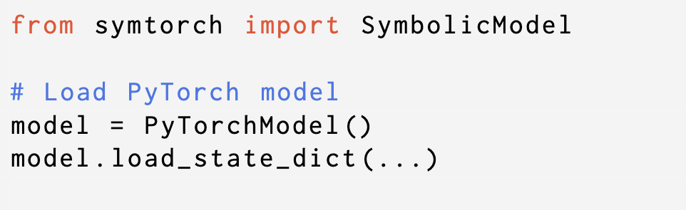
Select the specific model component, which we call a block, whose input-output behaviour we want to approximate using symbolic regression.
Wrap this component with SymTorch.
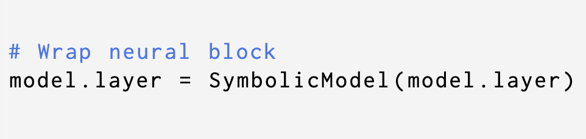
Pass in sample data to the model. SymTorch collects input-output activations of the wrapped block and performs symbolic distillation with PySR to discover the best closed-form analytic equations approximating the behavior of the block.
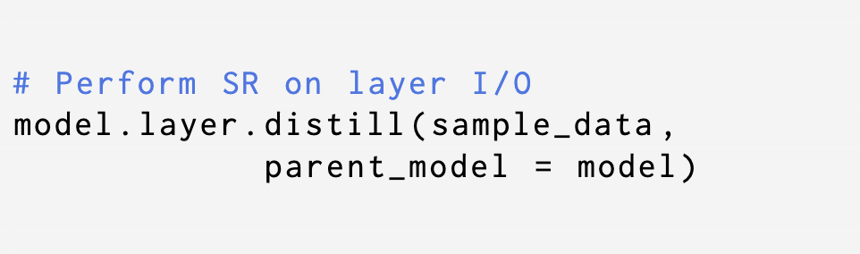
The symbolic distillation results in a Pareto Front of equations - the most accurate equation for each level of complexity.
The best equation is chosen to be the one that maximizes the fractional drop in log mean absolute error relative to an increase in equation complexity.
Specifically, the equation that maximizes the score;
$$ \text{score} = -\frac{\log (\text{loss}_i/\text{loss}_{i-1})}{\text{complexity}_i-\text{complexity}_{i-1}}$$
But we can choose whichever equation from the Pareto Front that best fits our analyses.
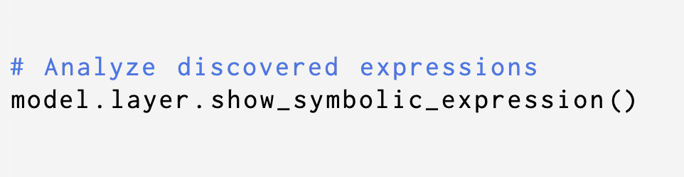
Optionally, we can replace the original block so that in the forward pass of the full model, we use the symbolic expression instead.
Gradients flow through the symbolic expressions, allowing the remaining neural components to continue updating during training while the model operates in symbolic mode.
We can seamlessly switch back to using the original block in the forward pass.
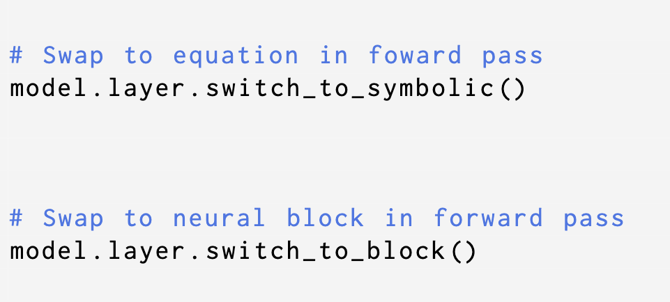
SymTorch handles all of the engineering overhead, including;
We demonstrate SymTorch across diverse architectures and use cases.
As a reproduction of the work by Cranmer et. al. (2020), we applied SymTorch to Graph Neural Networks trained on empirical N-body systems to discover the the true interaction forces between particles.
With SymTorch, we distilled the underlying Partial Differential Equation solution from a Physics-Informed Neural Network trained on sparse data, recovering both the functional form and previously unknown constants.
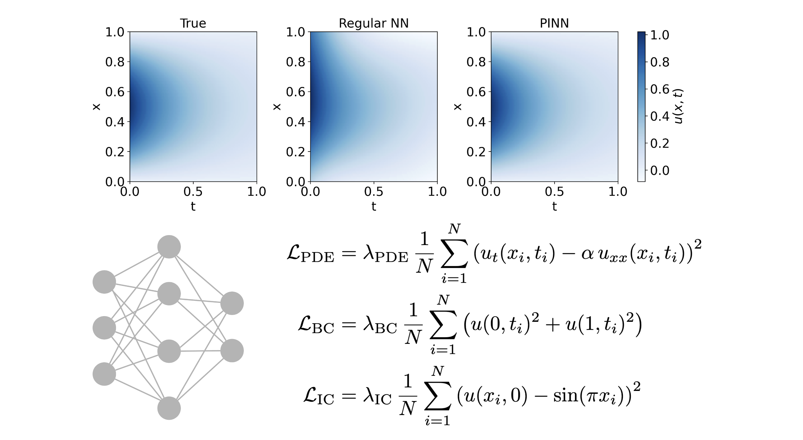
LLMs often fail at elementary tasks, like counting or multiplying large numbers. Rather than treating the LLM as a black-box that is only right or wrong, we can using SymTorch recover an explicit analytic approximation of the computation it is performing.
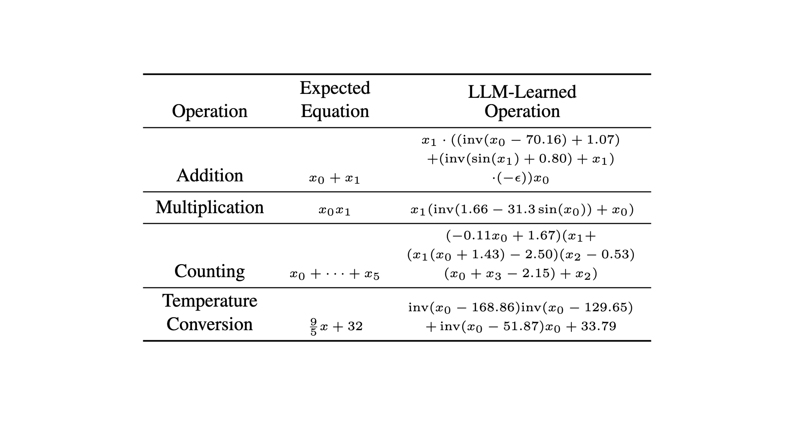
A method developed by Fong & Motani (2025) to explain black box model outputs in a local region - the symbolic extension to the popular LIME.
SymTorch provides a native implementation of this explainability method.
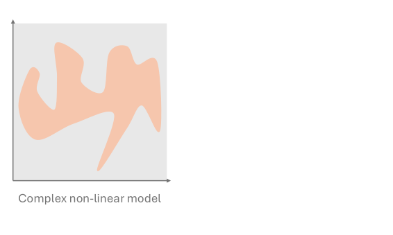
Pick the trained model you want to understand.
This can be any neural network or predictive system whose behaviour you want to inspect.
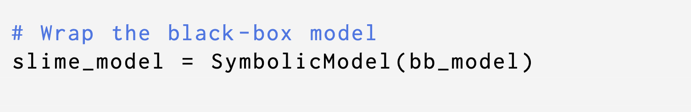
Choose a specific input example you care about. This is the exact data point where you want to understand how the model is behaving.
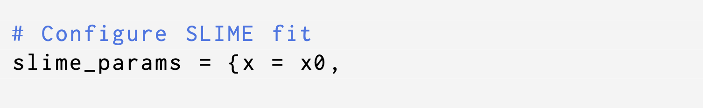
Choose how far around that point you want to look.
We do this by inputting sample data and choosing the \(J\)-nearest neighbors around the point of interest.
A small neighbourhood explains behaviour very close to the chosen example (small \(J\)). A larger neighbourhood captures more general behaviour around it (large \(J\)).
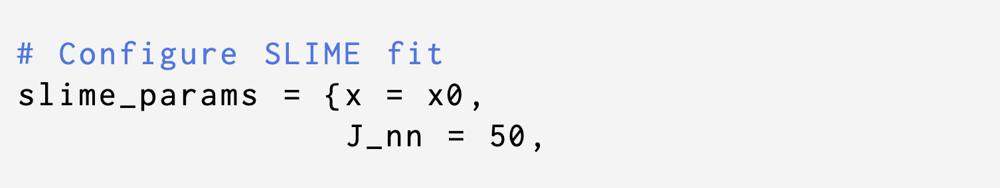
Generate additional data points around the chosen input. These synthetic samples help probe how the model behaves locally by slightly perturbing the original input. Choose how many synthetic points to generate — more points give a richer picture, but increase computation.
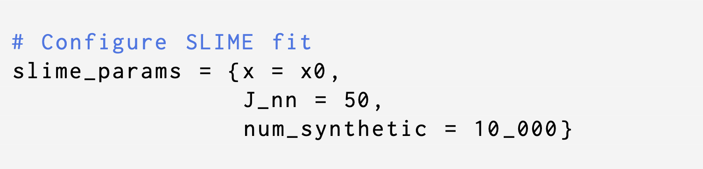
Run symbolic regression on the combined dataset (real data consisting of the \(J\)-nearest neighbors + synthetic samples).
This produces a simple, human-readable equation that approximates how the black-box model behaves in the selected region.
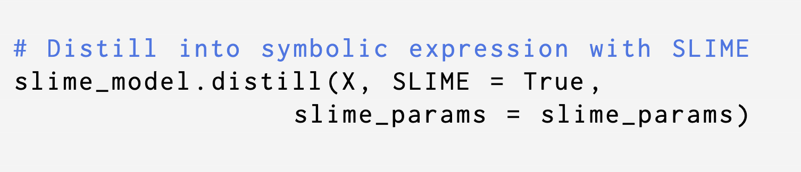
SLIME turns black-box behaviour into an interpretable local equation:
We show an exploratory framework to increase the token throughput of a small LLM. SymTorch makes experiments that sit on the interface of deep learning and symbolic regression incredibly simple and straightforward.
A broad line of work aims to reduce overall inference cost and latency through techniques such as quantization, pruning, and speculative decoding. Specifically, MLP layers constitute a substantial portion of transformer inference compute.
We explore a new approach to decreasing inference compute in transformers: replacing Multi-Layer Perceptron (MLP) layers with symbolic expressions via SymTorch.
SymTorch discovers the best equations mapping inputs to each output dimension. For wide neural networks, we need to make the symbolic distillation step more tractable by reducing the number of input and output dimensions. We do this dimensionality reduction step via Principle Component Analysis.
We use the small LLM Qwen2.5-1.5B-Instruct for our experiment. We perform dimensionality reduction to the inputs/outputs of three MLP layers in this model and replace with symbolic expressions with SymTorch. To train and test performance, we use the Wikitext dataset.
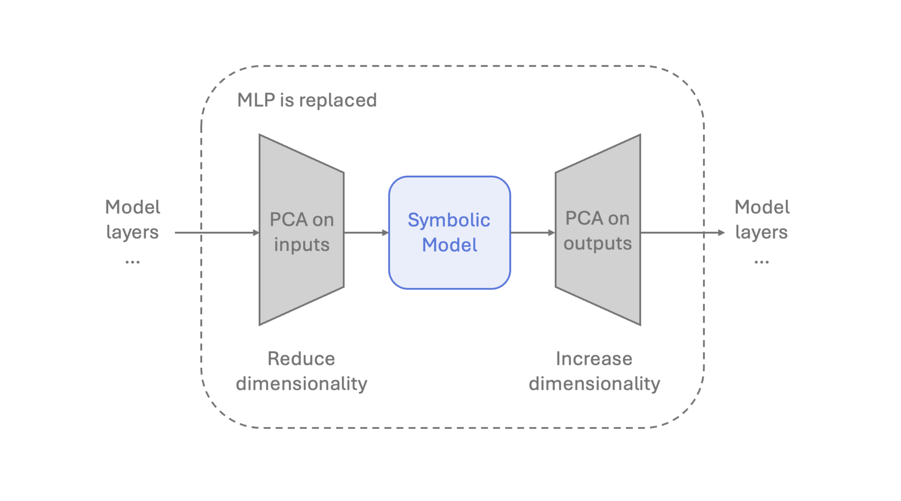
By replacing only three MLPs with symbolic expressions, we achieved a 8.3% increase in token throughput.
We observed a moderate increase in perplexity on the test set. However, this degradation was driven primarily by the dimensionality reduction stage rather than by the replacement of the MLP layers themselves.
The graph on the right shows performance compared to similarly sized open-source LLMs.
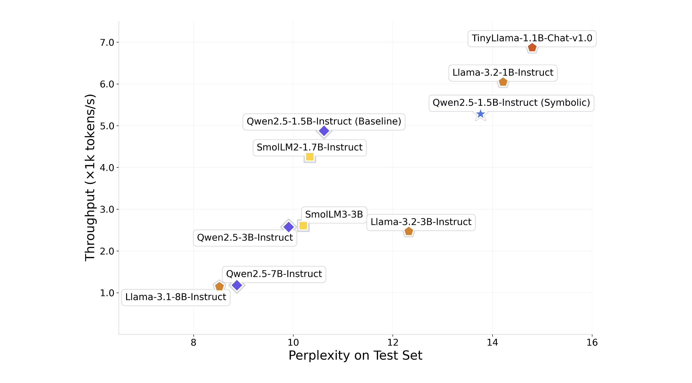
By presenting this framework, we aim to highlight how seamlessly SymTorch enables the integration of symbolic distillation with deep learning. Experiments that once required substantial custom engineering can now be performed with minimal overhead. By making symbolic distillation readily usable within modern architectures, SymTorch opens the door to more transparent, flexible, and creative exploration of deep learning systems.
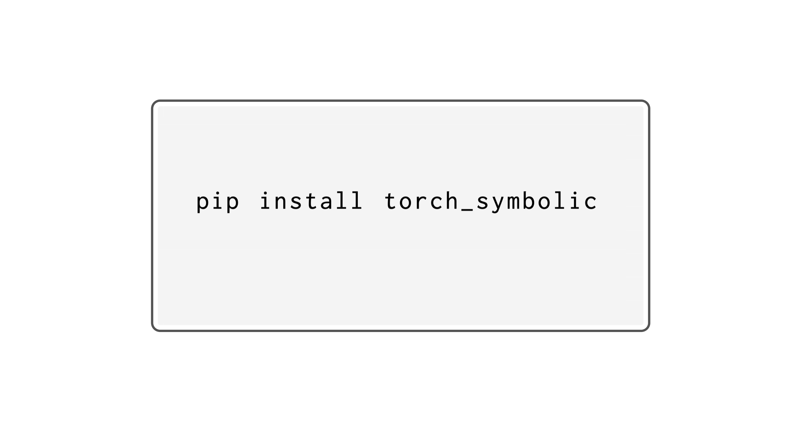